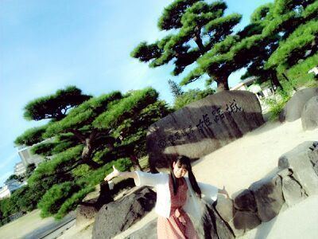
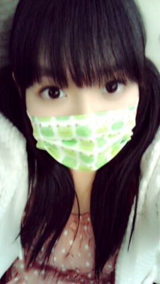
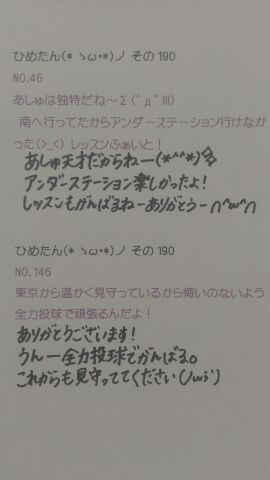
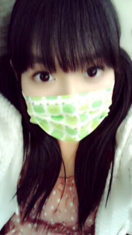
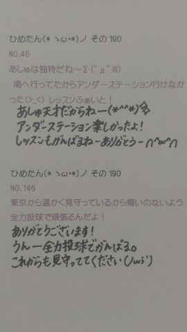

写真は姫路城ね∩^ω^∩＊
はいー
報告遅くなりましたが、イオンツアー最終日はイオンモール高崎！
ゆみ姉(岩瀬佑美子chan)、せいたん(畠中清羅chan)ありがとーうっ
そしてゆみ姉ふぁんさん、せいたんふぁんもありがとうございました(^^)
ひめきゅんさんもありがとーう！
この日は、ゆみ姉が先生やってくれたの！
ひめたん数学できないのね。ゆみ姉理系だったらしいのね。
こりゃ教えてもらうしか！ってなって、教えてもらいました(^^)
せいたんがいつものごとく
「うちが教えてあげるー！」って言ってくれたんだけど、問題みたらやっぱせいたんにはわからんって( ^ω^)
せいたんなーう。
んあー
最近、マスク族になりつつあるの
お気に入りなのはカエルさんのマスク！

うひゃひゃうひゃひゃ
顔が寝起きなのねー。
あそうだそうだ。
あしゅしゅ(齋藤飛鳥chan)に、
「お人形さんになりたいんだがどうしたらいいのかなの会」を立ち上げたことを報告したのね。
結局、会を立ち上げたのはいいんだけど中身が空っぽだから
あしゅに相談のってもらって、お人形さんになりたいんだがどうしたらいいのかなって一緒に考えたの(^^)
ちなみにあみあみ(能條愛未chan)にも相談したら「そんなの、まばたきしなかったらいいのよー」って。
そ...そっか...そうだねその通りだねーうん
 ひめたんって、洞察力ありそうだね。
ひめたんって、洞察力ありそうだね。
やっぱり人間観察とかしちゃう方なのかな？
見てなさそうで意外と見てる人かもー
てか、その気はないんだけど察してる。本能でやってるんだと思ふ←
隠し事してもすぐに見抜くからねー？
しかも気付いてないフリするからねー(￣^￣)？
ひめたんが通っている学校は、２期制ですか？３学期制ですか？
３学期制よー♪
中学は２学期制だった！
ひめたん目線で工業高校生のイメージってどんな感じですか？
作業着とかかっくいーよね(o>ω<o)
ひめたんは細かい作業とか苦手だから尊敬よー！
なにやら、期末試験でリベンジしなきゃならない科目があるんだって？
それは、どの科目ですか？
誰から聞いたのよーもー。
現代文、古文、ライティングね。
ゆーてテスト終わったのよね。まだ返されてないの←
どうだろな(´Д｀)

(*´・ω・*)ひめたん
写真は姫路城ね∩^ω^∩＊
はいー
報告遅くなりましたが、イオンツアー最終日はイオンモール高崎！
ゆみ姉(岩瀬佑美子chan)、せいたん(畠中清羅chan)ありがとーうっ
そしてゆみ姉ふぁんさん、せいたんふぁんもありがとうございました(^^)
ひめきゅんさんもありがとーう！
この日は、ゆみ姉が先生やってくれたの！
ひめたん数学できないのね。ゆみ姉理系だったらしいのね。
こりゃ教えてもらうしか！ってなって、教えてもらいました(^^)
せいたんがいつものごとく
「うちが教えてあげるー！」って言ってくれたんだけど、問題みたらやっぱせいたんにはわからんって( ^ω^)
せいたんなーう。
んあー
最近、マスク族になりつつあるの
お気に入りなのはカエルさんのマスク！

うひゃひゃうひゃひゃ
顔が寝起きなのねー。
あそうだそうだ。
あしゅしゅ(齋藤飛鳥chan)に、
「お人形さんになりたいんだがどうしたらいいのかなの会」を立ち上げたことを報告したのね。
結局、会を立ち上げたのはいいんだけど中身が空っぽだから
あしゅに相談のってもらって、お人形さんになりたいんだがどうしたらいいのかなって一緒に考えたの(^^)
ちなみにあみあみ(能條愛未chan)にも相談したら「そんなの、まばたきしなかったらいいのよー」って。
そ...そっか...そうだねその通りだねーうん
ひめたんって、洞察力ありそうだね。やっぱり人間観察とかしちゃう方なのかな？
見てなさそうで意外と見てる人かもー
てか、その気はないんだけど察してる。本能でやってるんだと思ふ←
隠し事してもすぐに見抜くからねー？
しかも気付いてないフリするからねー(￣^￣)？
ひめたんが通っている学校は、２期制ですか？３学期制ですか？３学期制よー♪
中学は２学期制だった！
ひめたん目線で工業高校生のイメージってどんな感じですか？作業着とかかっくいーよね(o>ω<o)
ひめたんは細かい作業とか苦手だから尊敬よー！
なにやら、期末試験でリベンジしなきゃならない科目があるんだって？それは、どの科目ですか？
誰から聞いたのよーもー。
現代文、古文、ライティングね。
ゆーてテスト終わったのよね。まだ返されてないの←
どうだろな(´Д｀)

(*´・ω・*)ひめたん